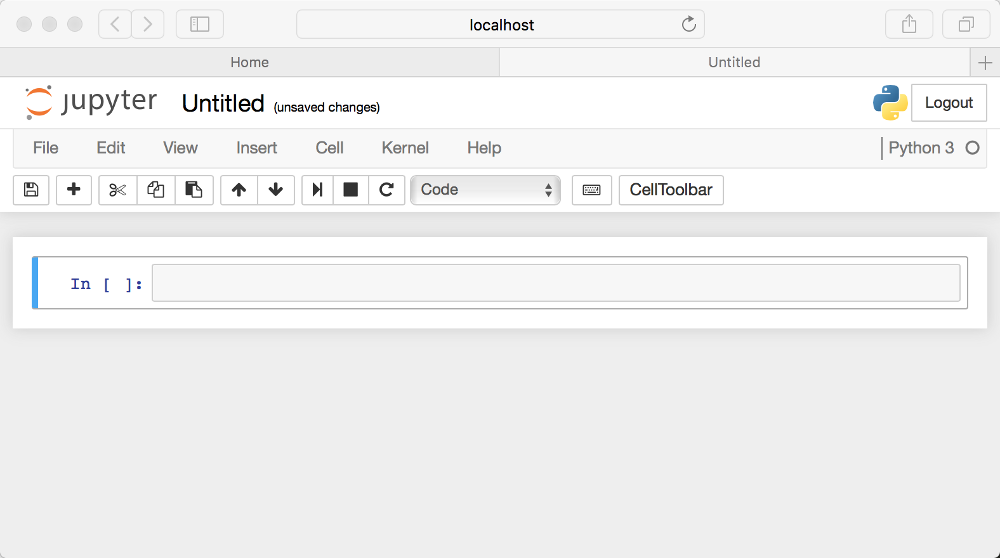

Getting started with Jupyter Notebooks
Contents
Getting started with Jupyter Notebooks#
We extensively use Jupyter Notebook during the course, and we expect you to hand over your project as a notebook presentation. It is a powerful tool for interactively developing and presenting new Machine Learning concepts and doing exercises. Therefore, it is vital to get comfortable with the Jupyter Notebook. This chapter will walk you through some basics how to use Jupyter Notebooks.
Setup#
Jupyter’s Notebooks is a web app. Jupyter starts up a local Python server to serve the app to your web browser, making it essentially platform-independent and opening the door to easier sharing on the web.
Installation#
The Jupyter Notebook is not included with Python, so if you want to try it out, you will need to install Jupyter and have a working Python environment. We have already installed one environment that includes Jupyter in the previous section.
If your environment does not include Jupyter, you can install it by running the following command in your conda environment:
conda install notebook
Starting Server#
With Jupyter installed, let’s start the Notebook server by opening your terminal application in the home folder of the project repository and running the following command:
jupyter notebook
This will start up Jupyter, and your default browser should start (or open a new tab) to the following URL: http://localhost:8888/tree. The opened page should look like this:
✏️ Alternatively, you can use an IDE to interact with the server
Running your first notebook#
Let’s familiarize ourselves a bit with the Jupyter Notebook web app and its interface.
Creating a Notebook#
Browse to the folder in which you would like to create your first notebook, click the “New” drop-down button in the top-right and select “Python 3”:

This should create a new notebook in the selected folder similar to this:

You might notice the word Untitled at the top of the page. It is the title of the page and the name of your notebook. As a good practice, change the name to something more descriptive. We use Snake case for variable names, function names, method names, and module or package (i.e., file) names. Move your mouse over the word Untitled and click on the text. You should now see an in-browser dialog titled Rename Notebook, so do.
✏️ Each time you create a new notebook, a new .ipynb file will be created. Each .ipynb file is a text file that describes your notebook’s contents in a JSON format.
Executing cells#
A Notebook’s cell defaults to using code whenever you create one, and that cell uses the kernel you chose when you started your Notebook.
Thus, to verify that everything is working as it should, you can add some Python code to the cell and try running its contents. For example, try the following code that will plot some data:
# import modules
import matplotlib.pyplot as plt
import numpy as np
from matplotlib import rcParams, cycler
from matplotlib.lines import Line2D
# fixing random state for reproducibility
np.random.seed(19680801)
# generate data
N = 10
data = [np.logspace(0, 1, 100) + np.random.randn(100) + ii for ii in range(N)]
data = np.array(data).T
cmap = plt.cm.coolwarm
rcParams['axes.prop_cycle'] = cycler(color=cmap(np.linspace(0, 1, N)))
custom_lines = [
Line2D([0], [0], color=cmap(0.), lw=4),
Line2D([0], [0], color=cmap(.5), lw=4),
Line2D([0], [0], color=cmap(1.), lw=4)
]
# create an instance of the plot
_, ax = plt.subplots(figsize=(10, 5))
lines = ax.plot(data)
ax.legend(custom_lines, ['Cold', 'Medium', 'Hot'])
ax.set_title('An Example of a plot');
Help and Documentation#
The Python language is built with the user in mind. Every Python object references a string, known as a doc string, which in most cases includes a concise summary of the object and how to use it. Python has a built-in help() function to access this information and print the results. For example, to see the documentation of the built-in sum function, you can do the following:
help(sum)
Help on built-in function sum in module builtins:
sum(iterable, /, start=0)
Return the sum of a 'start' value (default: 0) plus an iterable of numbers
When the iterable is empty, return the start value.
This function is intended specifically for use with numeric values and may
reject non-numeric types.
Jupyter also introduces the ? character as a shorthand for accessing this documentation and other relevant information:
L = [1, 2, 3]
L?
Adding Rich Content (Markdown)#
There are additional types of cells to code. Jupyter Notebook supports adding rich content to its cells as well. To do so, we will use Markdown. It is a lightweight, easy-to-learn markup language for formatting plain text. Its syntax has a one-to-one correspondence with HTML tags.
✏️ We also use Markdown to prepare materials for the course.
There is an overview of some basics to get you started:
# This is a level 1 heading
## This is a level 2 heading
This is some plain text that forms a paragraph. Add emphasis via **bold** and __bold__, or *italic* and _italic_.
Paragraphs must be separated by an empty line.
* Sometimes we want to include lists.
* Which can be bulleted using asterisks.
1. Lists can also be numbered.
2. If we want an ordered list.
[It is possible to include hyperlinks](https://www.example.com)
Inline code uses single backticks: `foo()`, and code blocks use triple backticks:
```
bar()
```
Or can be indented by 4 spaces:
foo()
And finally, adding images is easy: 
Line Magics#
Jupyter adds on top of the standard Python syntax. Those enhancements are known as magic commands. Magic commands come in two flavors: line magics, which are denoted by a single % prefix and operate on a single line of input, and cell magics, which are represented by a double %% prefix and work on multiple lines of input.
Let’s use %timeit to get a sense of the time it takes to execute [1] * 100:
%timeit [1] * 100
365 ns ± 3.32 ns per loop (mean ± std. dev. of 7 runs, 1,000,000 loops each)
To learn what magic commands are available in your environment, use %lsmagic.
Errors and Debugging#
Development always requires a bit of trial and error. When a Python script fails, it will often raise an Exception. The information about the cause of the error can be found in the traceback. Luckily enough, Jupyter prints the cause of the exception:
# create a method that rises an Exception
def func1(a):
return a / 0
# run the function
func1(2)
---------------------------------------------------------------------------
ZeroDivisionError Traceback (most recent call last)
Input In [5], in <cell line: 6>()
3 return a / 0
5 # run the function
----> 6 func1(2)
Input In [5], in func1(a)
2 def func1(a):
----> 3 return a / 0
ZeroDivisionError: division by zero
Resources#
- Gru21
Celeste Grupman. 28 jupyter notebook tips, tricks, and shortcuts. Dec 2021. URL: https://www.dataquest.io/blog/jupyter-notebook-tips-tricks-shortcuts/.
- Pry21
Benjamin Pryke. Tutorial: advanced jupyter notebooks. Nov 2021. URL: https://www.dataquest.io/blog/advanced-jupyter-notebooks-tutorial/.
- Pry22
Benjamin Pryke. How to use jupyter notebook: a beginner's tutorial. Jun 2022. URL: https://www.dataquest.io/blog/jupyter-notebook-tutorial/.
- Pyt21
Real Python. Jupyter notebook: an introduction. Feb 2021. URL: https://realpython.com/jupyter-notebook-introduction/#further-reading.
- Van17
Jacob T. Vanderplas. Python Data Science Handbook: Essential Tools for working with data. O'Reilly, 2017.